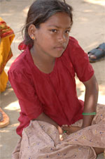

|
Zum UN-Weltflüchtlingstag am 20. Juni
Wirksamerer Schutz für Flüchtlinge und Vertriebene
terre des hommes fordert Menschenrecht auf Schutz vor Vertreibung |
Zum morgigen Internationalen Tag des Flüchtlings macht das entwicklungspolitische Kinderhilfswerk terre des hommes auf die dramatische Situation von Millionen Flüchtlingen und Vertriebenen weltweit aufmerksam. »Auf der ganzen Welt gibt es 50 Millionen intern Vertriebene, die im eigenen Land auf der Flucht sind. Die Hälfte davon wurden durch Krieg und Gewalt aus ihrer Heimat vertrieben«, so Ralf Willinger, Referent für Kinderrechte bei terre des hommes. »Da sie keine internationale Grenze überschreiten, haben intern Vertriebene keinen offiziellen Flüchtlingsstatus. Das bedeutet, dass ihnen oft keinerlei Hilfe zukommt. Viele werden sogar im eigenen Land verfolgt und diskriminiert. Das ist eine Lücke im internationalen Hilfssystem, die dringend geschlossen werden muss.«
Besonders besorgniserregend ist die Lage derzeit im Irak, Sudan, Burma, Simbabwe und in Kolumbien. Das südamerikanische Land hat mit 3,8 Millionen die dritthöchste Zahl an intern Vertriebenen weltweit. In Kolumbien sind systematische Vertreibungen seit Jahren Kriegsstrategie. Besonders Kleinbauern werden von Paramilitärs, Guerilla oder der Armee vertrieben, damit auf ihrem Land Koka, Bananen oder Ölpalmen angebaut werden können. »In Ländern wie Kolumbien, Simbabwe und Burma sind die Regierungen für Vertreibungen verantwortlich. Das darf von der internationalen Gemeinschaft nicht toleriert werden«, so Ralf Willinger. »Wir fordern deshalb, Vertreibungen international zu ächten. Lukrative Handelsverträge darf es für solche Regierungen nicht geben. Außerdem ist es dringend notwendig, ein Menschenrecht auf Schutz vor Vertreibung durchzusetzen.«
terre des hommes hilft in Burma, den Philippinen und Kolumbien Vertriebenen unter anderem mit medizinischer Versorgung, organisiert den Schulbesuch der Kinder und unterstützt Familien dabei, sich zu organisieren und für ihre Rechte einzusetzen. Zudem fördert terre des hommes die Arbeit von Menschenrechtsorganisationen, die mit Kampagnen auf die Situation der Vertriebenen im Land aufmerksam machen. |
Sexuellen Missbrauch von Kindern verhindern!
Positives Fazit der terre des hommes-Aufklärungskampagne durch Bundesfamilienministerium und Kinderkommission des Bundestages |
Das entwicklungspolitische Kinderhilfswerk terre des hommes Deutschland e.V., das Bundesministerium für Familie, Senioren, Frauen und Jugend (BMFSFJ) und die Kinderkommission des Deutschen Bundestags haben heute ein positives Fazit zu dem Aufklärungsspot »Witness« (»Zeugen«) gegen den sexuellen Missbrauch von Kindern gezogen. Der Spot richtet sich gegen das unvermindert drängende Problem der sexuellen Ausbeutung von Kindern im Tourismus. Er ist Teil der terre des hommes-Kampagne »Please Disturb«. Seine Kernaussage: Durch Aufmerksamkeit und Zivilcourage kann jeder Einzelne sexuellen Missbrauch von Kindern verhindern.
Seit über einem Jahr wird der Spot im Bordprogramm des Kooperationspartners LTU gezeigt. Allein auf den Flügen dieser Fluggesellschaft sahen ihn über sechs Millionen Zuschauer. Auch »Thai Airways International« und »Transportes Aereos Portugueses« nahmen ihn in ihr Bordprogramm auf. Zehn Fernsehsender strahlten den Spot kostenfrei aus, darunter RTL, n-tv, VOX und die Deutsche Welle. Allein der Gegenwert der Schaltungskosten übersteigt die Projektkosten um ein vielfaches. Außerdem wurde der Spot bisher in über 150 Kinos gezeigt.
Eine wichtige Grundlage der Evaluation bildet die Untersuchung der Wirkung des Spots auf die Zuschauer durch das forsa-Institut. Die Ergebnisse der Untersuchung zeigen, dass »Witness« die Botschaften deutlich vermittelt: Der Zuschauer sieht den Spot nachweislich mit hoher Aufmerksamkeit und fühlt sich aufgefordert, in Verdachtmomenten einzuschreiten. Damit übertrifft das Projekt quantitativ die gesetzten Reichweitenziele und ist in der qualitativen Wirkung ein Erfolg.
Die Anregung zu »Witness« wurde maßgeblich von der Kinderkommission des Bundestags gegeben. »Sexuelle Ausbeutung von Kindern stellt eine besonders schreckliche Form der Menschenrechtsverletzung dar. Deutschland muss sich aktiv an dem weltweiten Schutz von Kindern beteiligen. Witness ist in diesem Bereich ein lobenswertes Engagement«, sagte Marlene Rupprecht, Vorsitzende der Kommission. Ingrid-Barbara Simon, Unterabteilungsleiterin des BMFSFJ, das den Spot gefördert hat, erklärte zum Projektabschluss: »Die Bekämpfung sexuellen Missbrauchs von Kindern im Tourismus ist ein zentrales Thema unserer Arbeit. Das Bundesministerium für Familie, Senioren, Frauen und Jugend wird auch weiterhin den Kampf gegen sexuelle Gewalt und Ausbeutung von Kindern im Tourismus unterstützen und sich mit aller Kraft für den weltweiten Schutz von Kindern und Jugendlichen einsetzen. Die Projektevaluation zeigt, dass eine Kooperation mit Projektpartnern einen effizienten Beitrag leisten kann.«
Auch die Projektkoordinatorin von terre des hommes, Christa Dammermann, zog ein positives Fazit: »Die Ergebnisse der Projektevaluation zeigen, dass sich unser Engagement lohnt und Wirkung zeigt. Wir müssen alles daran setzen, die Rechte von Kindern zu verteidigen. Jeder kann einen Beitrag leisten und sexuellen Missbrauch von Kindern verhindern – wenn er nicht wegsieht.«
Download der Projektevaluation als PDF-Dokument |
Zum Tag gegen Kinderarbeit am 12 Juni
Keine öffentlichen Gelder für Produkte aus Kinderarbeit
terre des hommes fordert faires Beschaffungswesen in Kommunen und Gemeinden |
Das entwicklungspolitische Kinderhilfswerk terre des hommes fordert Städte und Gemeinden, Landesregierungen und den Bund auf, in ihrem Beschaffungswesen keine Produkte aus ausbeuterischer Kinderarbeit einzukaufen. Bereits 65 Stadt- und Gemeinderäte, darunter München, Bonn und Hannover und der Bayerische Landtag haben sich verpflichtet, beim Einkauf auf faire Arbeitsbedingungen und das Verbot ausbeuterischer Kinderarbeit bei der Herstellung der Produkte zu achten. Weltweit werden 126 Millionen Kinder unter 15 Jahren als Arbeitssklaven ausgebeutet. Etwa zehn Prozent dieser Kinder stellen Produkte her, die in Industrieländer exportiert werden und auch in der öffentlichen Beschaffung eine Rolle spielen. Die Kinder stellen Berufsbekleidung her oder schuften in Steinbrüchen, auf Kaffee-, Tee- und Blumenplantagen. »Die Bundesregierung und viele Länder fördern den fairen Handel und Sozialsiegel gegen Kinderarbeit. Sie rufen Verbraucher und Unternehmen zu nachhaltigem Konsum auf. Wir fordern Städte, Kommunen und die öffentliche Hand auf, hier ebenfalls aktiv zu werden«, sagte Barbara Küppers, Kinderarbeitsexpertin bei terre des hommes. »Dies wäre ein starkes Signal an die anbietenden Unternehmen, sicherzustellen, dass ihre Produkte unter menschenwürdigen Bedingungen hergestellt werden.«
Zurzeit besteht die Gefahr, dass Beschaffungsämter von Anbietern verklagt werden, wenn sie das Verbot von Kinderarbeit zu einem Kriterium bei öffentlichen Ausschreibungen machen. Eine neue EU-Richtlinie zur öffentlichen Beschaffung ermöglicht die Aufnahme weiterer Kriterien neben der Wirtschaftlichkeit. Mehrere EU-Mitglieder, darunter Großbritannien, Frankreich und Österreich, haben diese EU-Richtlinie bereits in die nationale Gesetzgebung übernommen. »Die Bundesregierung hat die ILO Konvention 182 gegen die schlimmsten Formen der Kinderarbeit ratifiziert und fördert seit langem Aktionsprogramme gegen ausbeuterische Arbeit. Das Wirtschaftsministerium ist jetzt politisch gefordert, mit der Umsetzung der EU-Richtlinien den Kommunen und Gemeinden Rechtssicherheit für ein faires öffentliches Beschaffungswesen zu geben und damit einen Beitrag zum Schutz von Kindern vor Ausbeutung zu leisten«, so Küppers.
|
Ankunft der ersten kriegsverletzten Kinder aus Vietnam am 2. Juni 1967
Protest und aktive Hilfe
Auch nach 40 Jahren Einsatz für Kriegsopfer in Vietnam |
Am 2. Juni 1967 landete das erste Flugzeug mit kriegsverletzten Kindern aus Vietnam, die auf Initiative von terre des hommes nach Deutschland gebracht wurden. An Bord waren 17 schwer verwundete Kinder, die in deutschen Krankenhäusern in Hamburg, Hannover, Frankfurt und Pforzheim behandelt wurden. Mitglieder von terre des hommes beteiligten sich auch an den Protesten der Studentenbewegung gegen den Vietnamkrieg, die nach dem Tod von Benno Ohnesorg am gleichen Tag ihren ersten Höhepunkt erreichten.
Die Hilfsaktion ging zurück auf eine Initiative von Aktivisten um den Schriftsetzer Lutz Beisel, der am 8. Januar 1967 das Kinderhilfswerk terre des hommes Deutschland in Stuttgart gegründet hatte. „Die Bilder vom Krieg in Vietnam raubten uns den Schlaf. Wir wollten handeln und konkret helfen“, so Lutz Beisel. terre des hommes-Aktivisten suchten Ärzte, Krankenhäuser und Betreuungspersonen, die sich unentgeltlich um die Kinder kümmerten. Insgesamt wurden in den folgenden Jahren über 200 Kinder aus Vietnam evakuiert und in Deutschland medizinisch versorgt. Mit dem Ende des Krieges begann der Aufbau von Programmen in Vietnam selbst.
Auch über 30 Jahre nach Kriegsende leiden die Menschen in Vietnam unter den verheerenden Folgen der Bombenangriffe der US-Armee. Schätzungen zufolge versprühten die USA rund 72 Millionen Liter des Dioxingiftes „Agent Orange“, um die „Dschungel-Guerilla“ des Vietcong ihrer Lebensgrundlage zu berauben. „Noch heute werden Kinder in der mittlerweile dritten Generation mit Spätenfolgen dieser Dioxin-Vergiftungen wie Missbildungen und Hirnschäden geboren“, so Dr. Nguyen Te Thé, Projektkoordinator von terre des hommes in Vietnam. Bis heute vergiftete Böden und stark erhöhte Dioxinwerte in Körpergeweben von Fischen bewirkten zudem, dass das Gift über die Nahrungskette in den Körper der Menschen gelange und deren genetisches Erbgut angreife. „Es ist ein Skandal, dass es für die vietnamesischen Opfer des Krieges noch immer keine Entschädigung durch die US-Chemiefirmen gibt, die das Land verseucht haben“, so Dr. Thé. terre des hommes setzt sich dafür ein, dass die Opfer des Krieges in Vietnam endlich entschädigt werden.
Zum Special "40 Jahre Hilfe für Kinder in Not" |
2. Juni 1967: Erster Rettungsflug aus Vietnam |
Sommer 1967: Während in Deutschland am 2. Juni die Proteste der Studentenbewegung einen ersten Höhepunkt erleben, landet der erste Hilfsflug von terre des hommes in Hamburg. An Bord 17 schwer kriegsverletzte Kinder aus Vietnam. Sie sollen in deutschen Krankenhäusern versorgt werden. Die Hilfsaktion geht auf eine Handvoll Entschlossener um den Schriftsetzer Lutz Beisel zurück, die wenige Monate zuvor das Kinderhilfswerk terre des hommes in Deutschland gegründet hatten. »Die Bilder vom Krieg in Vietnam raubten uns den Schlaf. Wir wollten handeln, konkret helfen, nicht nur protestieren«, erläutert der Gründer von terre des hommes die Motivation.
Mehr: http://www.tdh.de/content/40jahre/beginn_vietnam/
Aus Anlass des 40. Jahrestages des ersten Hilfsflugs veranstaltet terre des hommes am 1. Juni 2007 eine Pressekonferenz in Hamburg. |
|
|
|
 Ansprechpartner Ansprechpartner
|
|
Wolfgang Deppisch
(Projektinfos)
Tel. 07222 / 32927
Heinz Wolf
(Sponsoring, Allgemeines)
Tel. 07225 / 75543
weitere Ansprechpartner
|
|
Erlöse
1992-2012
|
|

Jahr |
Euro |
1992 |
70.000 |
1993 |
75.600 |
1994 |
83.883 |
1995 |
69.617 |
1996 |
51.412 |
1997 |
61.749 |
1998 |
60.333 |
1999 |
68.742 |
2000 |
85.492 |
2001 |
106.375 |
2002 |
78.937 |
2003 |
84.027 |
2004 |
76.662 |
2005 |
149.941 |
2006 |
84.497 |
2007 |
105.958 |
2008 |
104.053 |
2009 |
100.833 |
2010 |
107.254 |
2011 |
103.600 |
| 2012 |
158.250 |
| 2013 |
163.420 |
1977-2013 |
mehr als 2,7 Mio. € |
|
Detailansicht der Erlöszahlen |
|
|


;)